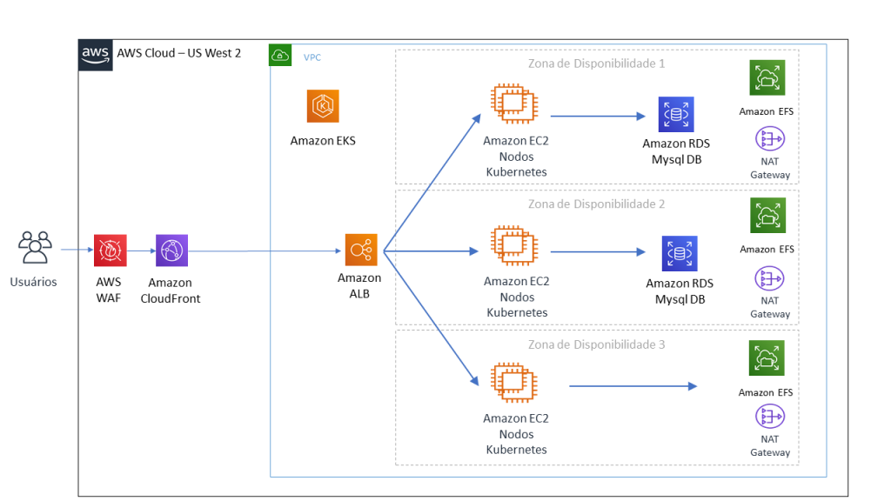

Segue um pequeno exemplo de como podemos usar imagem em nossa página html.

Antes da pandemia, a plataforma tinha uma média de 500 procedimentos por dia. A arquitetura consistia em: uma
base relacional MySQL para gerenciamento de usuários e armazenamento de permissões concedidas, um servidor de
aplicativos PHP para o back-end e frontend da aplicação web, um sistema de arquivos NFS para o repositório de
documentos gerados e o armazenamento de recursos estáticos do aplicativo.

A pandemia do COVID-19 obrigou o Virtual Commissioner a escalar e fornecer mais capacidade para suportar o
fardo. Um conjunto de máquinas virtuais do EC2 foi implantado em paralelo para atender à crescente demanda de
processamento.
A plataforma foi projetada para lidar com o número de usuários inicialmente planejado, no entanto, esse número
aumentou substancialmente como resultado da pandemia.
Isso causou quedas esporádicas no site, criando assim indisponibilidade e impossibilidade de gerar certificados
de tráfego de cidadãos.
Da AWS, devido à importância desta plataforma, duas linhas de ação foram tomadas, juntamente com o cliente, para
remediar a situação e garantir a disponibilidade do Virtual Commissioner.
O ELB permite que as requisições sejam distribuídas em múltiplos destinos, e se uma validação do status
(health check) retornar com falha, o pacote deixa de ser enviado para o nó afetado.
Uma vantagem da arquitetura Multi-AZ (Multi Availability Zone) é permiter que a aplicação continue ativa,
contra a queda de uma Zona de Disponibilidade, garantindo escalabilidade, performance e segurança.
Muitos serviços da AWS possuem o Multi-AZ nativo, entregando um nível de qualidade alto. A título de exemplo são
eles, o Amazon S3 (Simple Storage Service) e o Amazon DynamoDB.